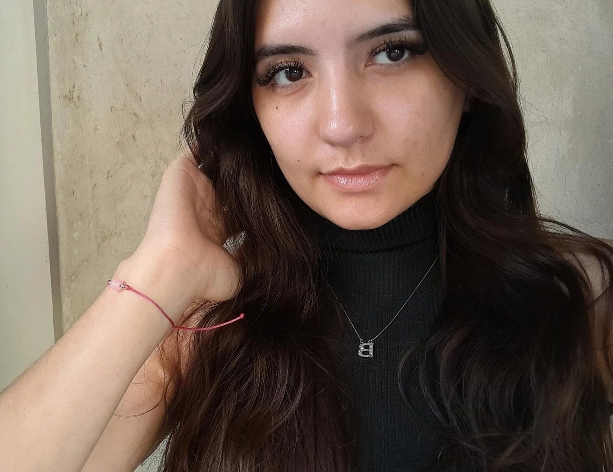

Olá, eu sou a Brenda Meira
Tive meu primeiro contato com a programação no curso Dev The Devs - Disponibilizado pela Tecnopuc, onde descobri minha verdadeira paixão. Me destaquei e fui selecionada para representar o Paraná no evento de conclusão do curso em POA e ganhei ingressos para o maior evento de tecnologia, South Summit.
Atualmente estou fazendo faculdade de Engenharia de Software (2024 - 2025).
Profissionalmente já fui jovem aprendiz de telemarketing receptivo (maio de 2024 - agosto de 2025) e estagiei na Compass na área de Quality Assurance (março de 2025 - setembro de 2025).